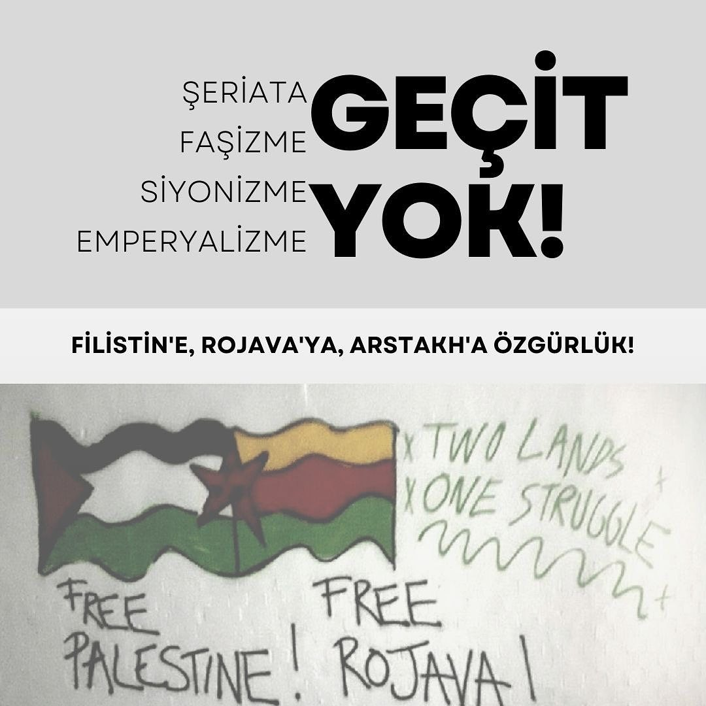

2023-10-22 12:44:00
Şiddet, sömürü ve işgal coğrafyaları birbirleriyle bağlantılı olduğu gibi özgürlük mücadeleleri de iç içe ve dirsek dirseğe. Halkların özgürlük mücadelelerinin yanında dayanışıyoruz, sömürgeciliğin halkları, bedenleri esaret altına almaya çalışan politikalarını yakından tanıyoruz.
Şeriatın, siyonizmin, faşizmin ve emperyalizmin içinden doğan Orta Doğu halklarının mücadelesi, bizim mücadelemizdir.
İsrail Devletinin 75 yıldır soykırım uyguladığı, katlettiği Filistin halkının haklı mücadelesinin yanındayız. Filistin halkının mücadelesi, bizlerin mücadelesidir!
Etnik temizlik ve sürgün arasında bırakılmış Artsakh'lı Ermeni halkının yanındayız. Artsakh Ermeni'ydi, Ermeni'dir ve Ermeni olarak hatırlanacak. Artsakh'lı Ermeni halkının vermiş olduğu bağımsızlık mücadelesini anıyor, kayıpları için yaslarını paylaşıyoruz.
Rojava'da, Gazze’de etnik temizliğe, soykırıma hayır!
Rojava’dan Filistin’e özgürlük!
